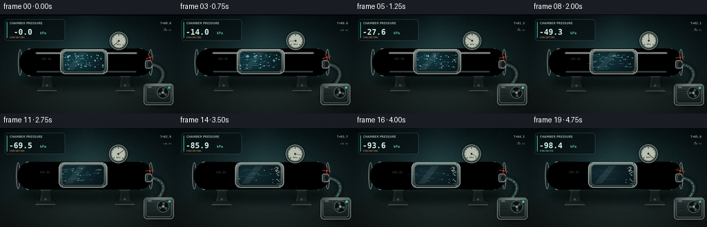
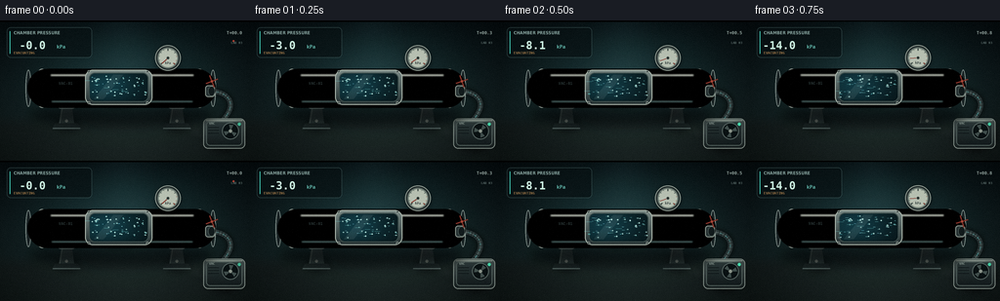
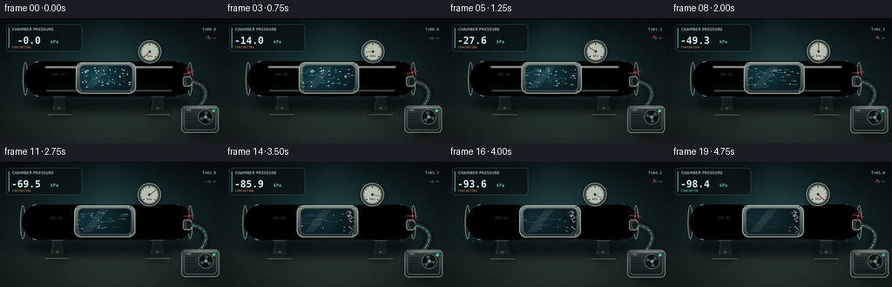
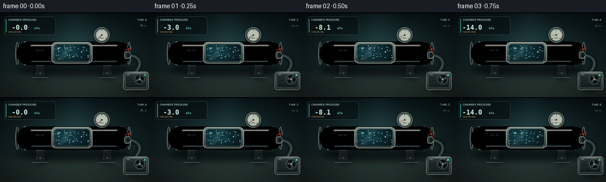

CODING AGENTS AS PIXEL WORLD MODELS
traex/DeepSeek-V4.1-Flash · mechanics_0025
点击播放 · 原生 RGB 像素
此结果可播放，但该运行尚未通过最终提交审核。页面展示不代表评测通过。
逐轮保存的候选
回放视频、检查图与代码变化。
每份候选均可单独播放。实际图片检查记录在下方工具轨迹中。
候选 01播放与检查图
点击播放 · 原生 RGB 像素


展开代码变化
--- 上一保存版本
+++ 本次保存版本
@@ -0,0 +1,925 @@
+from __future__ import annotations
+
+import math
+from pathlib import Path
+
+import numpy as np
+from PIL import Image, ImageDraw, ImageFilter, ImageFont
+
+import artifact_io
+
+
+W, H = 256, 144
+S = 4
+HI_W, HI_H = W * S, H * S
+FPS = 4.0
+FRAMES = 20
+
+ROOT = Path(__file__).resolve().parent
+FONT_REGULAR = "/usr/share/fonts/truetype/dejavu/DejaVuSansCondensed.ttf"
+FONT_BOLD = "/usr/share/fonts/truetype/dejavu/DejaVuSansCondensed-Bold.ttf"
+FONT_MONO = "/usr/share/fonts/truetype/dejavu/DejaVuSansMono-Bold.ttf"
+
+
+def clamp(value: float, low: float = 0.0, high: float = 1.0) -> float:
+ return max(low, min(high, value))
+
+
+def smoothstep(value: float) -> float:
+ value = clamp(value)
+ return value * value * (3.0 - 2.0 * value)
+
+
+def mix(a, b, amount: float):
+ return tuple(int(round(a[i] + (b[i] - a[i]) * amount)) for i in range(len(a)))
+
+
+def font(size: int, bold: bool = False, mono: bool = False) -> ImageFont.FreeTypeFont:
+ path = FONT_MONO if mono else (FONT_BOLD if bold else FONT_REGULAR)
+ return ImageFont.truetype(path, size * S)
+
+
+def rounded_gradient(
+ image: Image.Image,
+ box: tuple[int, int, int, int],
+ radius: int,
+ top: tuple[int, int, int],
+ bottom: tuple[int, int, int],
+ outline: tuple[int, int, int] | None = None,
+ outline_width: int = 1,
+) -> None:
+ x0, y0, x1, y1 = (int(v * S) for v in box)
+ width, height = x1 - x0, y1 - y0
+ if width <= 0 or height <= 0:
+ return
+ ramp = np.linspace(0.0, 1.0, height, dtype=np.float32)[:, None, None]
+ colors = np.asarray(top, dtype=np.float32)[None, None, :] * (1.0 - ramp)
+ colors += np.asarray(bottom, dtype=np.float32)[None, None, :] * ramp
+ panel = Image.fromarray(np.uint8(np.repeat(colors, width, axis=1)))
+ mask = Image.new("L", (width, height), 0)
+ ImageDraw.Draw(mask).rounded_rectangle(
+ (0, 0, width - 1, height - 1), radius=radius * S, fill=255
+ )
+ image.paste(panel, (x0, y0), mask)
+ if outline is not None:
+ draw = ImageDraw.Draw(image)
+ draw.rounded_rectangle(
+ (x0, y0, x1, y1),
+ radius=radius * S,
+ outline=outline,
+ width=outline_width * S,
+ )
+
+
+def soft_shadow(
+ image: Image.Image,
+ box: tuple[int, int, int, int],
+ color: tuple[int, int, int, int] = (0, 0, 0, 130),
+ blur: float = 5.0,
+) -> None:
+ x0, y0, x1, y1 = (int(v * S) for v in box)
+ pad = int(blur * S * 2)
+ layer = Image.new("RGBA", (HI_W, HI_H), (0, 0, 0, 0))
+ draw = ImageDraw.Draw(layer)
+ draw.ellipse((x0, y0, x1, y1), fill=color)
+ layer = layer.filter(ImageFilter.GaussianBlur(blur * S))
+ image.alpha_composite(layer) if image.mode == "RGBA" else image.paste(
+ layer, (0, 0), layer
+ )
+ del pad
+
+
+def glow_layer(size: tuple[int, int], blur: float) -> Image.Image:
+ return Image.new("RGBA", size, (0, 0, 0, 0))
+
+
+def composite_glow(base: Image.Image, layer: Image.Image, blur: float) -> None:
+ blurred = layer.filter(ImageFilter.GaussianBlur(blur * S))
+ base.alpha_composite(blurred)
+ base.alpha_composite(layer)
+
+
+def make_background() -> Image.Image:
+ yy, xx = np.mgrid[0:HI_H, 0:HI_W].astype(np.float32)
+ yn = yy / HI_H
+ xn = xx / HI_W
+ top = np.array([8, 17, 20], dtype=np.float32)
+ bottom = np.array([24, 39, 39], dtype=np.float32)
+ rgb = top[None, None, :] * (1.0 - yn[:, :, None])
+ rgb += bottom[None, None, :] * yn[:, :, None]
+
+ radial = np.exp(
+ -(
+ ((xx - HI_W * 0.50) / (HI_W * 0.34)) ** 2
+ + ((yy - HI_H * 0.41) / (HI_H * 0.36)) ** 2
+ )
+ )
+ rgb += np.array([15, 31, 33], dtype=np.float32)[None, None, :] * radial[:, :, None]
+
+ floor_blend = np.clip((yn - 0.66) / 0.09, 0.0, 1.0)
+ floor_rgb = np.array([20, 29, 29], dtype=np.float32)
+ floor_rgb = floor_rgb[None, None, :] + np.array(
+ [10, 13, 12], dtype=np.float32
+ )[None, None, :] * np.exp(
+ -((xx - HI_W * 0.52) / (HI_W * 0.38)) ** 2
+ )[:, :, None]
+ rgb = rgb * (1.0 - floor_blend[:, :, None]) + floor_rgb * floor_blend[:, :, None]
+
+ vignette = 1.0 - 0.34 * (
+ ((xx - HI_W * 0.5) / (HI_W * 0.67)) ** 2
+ + ((yy - HI_H * 0.49) / (HI_H * 0.70)) ** 2
+ )
+ rgb *= np.clip(vignette, 0.52, 1.0)[:, :, None]
+
+ rng = np.random.default_rng(14)
+ rgb += rng.normal(0.0, 1.9, (HI_H, HI_W, 1))
+ image = Image.fromarray(np.uint8(np.clip(rgb, 0, 255))).convert("RGBA")
+
+ shaft = Image.new("RGBA", (HI_W, HI_H), (0, 0, 0, 0))
+ sd = ImageDraw.Draw(shaft)
+ sd.polygon(
+ [
+ (HI_W * 0.40, 0),
+ (HI_W * 0.58, 0),
+ (HI_W * 0.73, HI_H * 0.78),
+ (HI_W * 0.31, HI_H * 0.78),
+ ],
+ fill=(86, 151, 153, 20),
+ )
+ shaft = shaft.filter(ImageFilter.GaussianBlur(18 * S))
+ image.alpha_composite(shaft)
+
+ floor = Image.new("RGBA", (HI_W, HI_H), (0, 0, 0, 0))
+ fd = ImageDraw.Draw(floor)
+ horizon = int(HI_H * 0.705)
+ fd.line((0, horizon, HI_W, horizon), fill=(104, 128, 126, 48), width=max(1, S // 2))
+ for x in range(-2, 9):
+ start_x = int(HI_W * (0.5 + (x - 3.5) * 0.045))
+ end_x = int(HI_W * (0.5 + (x - 3.5) * 0.18))
+ fd.line((start_x, horizon, end_x, HI_H), fill=(104, 127, 124, 28), width=max(1, S // 2))
+ for y in (0.735, 0.795, 0.875, 0.975):
+ fd.line((0, int(HI_H * y), HI_W, int(HI_H * y)), fill=(112, 135, 132, 18), width=max(1, S // 2))
+ floor = floor.filter(ImageFilter.GaussianBlur(0.7 * S))
+ image.alpha_composite(floor)
+
+ return image
+
+
+BACKGROUND = make_background()
+
+
+def draw_supports(image: Image.Image) -> None:
+ draw = ImageDraw.Draw(image)
+ for cx in (68, 181):
+ soft_shadow(image, (cx - 11, 99, cx + 12, 112), (0, 0, 0, 120), 4.0)
+ draw.polygon(
+ [
+ (int((cx - 5) * S), int(84 * S)),
+ (int((cx + 5) * S), int(84 * S)),
+ (int((cx + 8) * S), int(105 * S)),
+ (int((cx - 8) * S), int(105 * S)),
+ ],
+ fill=(44, 58, 59, 255),
+ )
+ draw.line(
+ (int((cx - 4) * S), int(86 * S), int((cx - 7) * S), int(104 * S)),
+ fill=(95, 114, 112, 160),
+ width=S,
+ )
+ draw.polygon(
+ [
+ (int((cx - 12) * S), int(104 * S)),
+ (int((cx + 12) * S), int(104 * S)),
+ (int((cx + 15) * S), int(110 * S)),
+ (int((cx - 15) * S), int(110 * S)),
+ ],
+ fill=(28, 38, 39, 255),
+ )
+ draw.line(
+ (int((cx - 14) * S), int(109 * S), int((cx + 14) * S), int(109 * S)),
+ fill=(92, 111, 109, 150),
+ width=S,
+ )
+ draw.rounded_rectangle(
+ (int((cx - 9) * S), int(83 * S), int((cx + 9) * S), int(89 * S)),
+ radius=3 * S,
+ fill=(65, 82, 82, 255),
+ outline=(112, 132, 130, 190),
+ width=S,
+ )
+ draw.ellipse(
+ (int((cx - 1.5) * S), int(100 * S), int((cx + 1.5) * S), int(103 * S)),
+ fill=(132, 145, 139, 180),
+ )
+
+
+def pipe_mask(buckle: float) -> np.ndarray:
+ yy, xx = np.mgrid[0:HI_H, 0:HI_W]
+ c1, c2 = 48 * S, 201 * S
+ yc = 68 * S
+ radius = 20 * S
+ radius_at_x = radius * (
+ 1.0
+ - 0.095 * buckle * np.exp(-(((xx - 124 * S) / (34 * S)) ** 2))
+ - 0.025 * buckle * np.exp(-(((xx - 158 * S) / (18 * S)) ** 2))
+ )
+ body = (xx >= c1) & (xx <= c2) & (np.abs(yy - yc) <= radius_at_x)
+ left_cap = (xx - c1) ** 2 + (yy - yc) ** 2 <= radius**2
+ right_cap = (xx - c2) ** 2 + (yy - yc) ** 2 <= radius**2
+ return body | left_cap | right_cap
+
+
+def draw_pipe(image: Image.Image, t: float, buckle: float) -> None:
+ draw = ImageDraw.Draw(image)
+ soft_shadow(image, (30, 84, 219, 107), (0, 0, 0, 145), 5.0)
+
+ mask = pipe_mask(buckle)
+ yy, xx = np.mgrid[0:HI_H, 0:HI_W].astype(np.float32)
+ yc = 68 * S
+ q = np.clip((yy - yc) / (20 * S), -1.15, 1.15)
+ top_light = np.exp(-((q + 0.34) / 0.36) ** 2)
+ low_bounce = np.exp(-((q - 0.67) / 0.22) ** 2)
+ shade = 0.31 + 0.67 * top_light + 0.12 * low_bounce
+ shade -= 0.24 * np.clip(np.abs(q) - 0.77, 0.0, 1.0)
+ brush = (
+ 2.2 * np.sin(xx * 0.047 + yy * 0.12)
+ + 1.3 * np.sin(xx * 0.019 - yy * 0.27)
+ + 0.8 * np.sin(xx * 0.11)
+ )
+ warm = np.exp(-((q + 0.15) / 0.55) ** 2)
+ color = np.zeros((HI_H, HI_W, 3), dtype=np.float32)
+ color[:, :, 0] = 91 * shade + 11 * warm + brush
+ color[:, :, 1] = 111 * shade + 12 * warm + brush
+ color[:, :, 2] = 114 * shade + 15 * warm + brush * 0.8
+ color[:, :, 0] += 22 * np.exp(-((yy - 51 * S) / (2.2 * S)) ** 2)
+ color[:, :, 1] += 31 * np.exp(-((yy - 51 * S) / (2.2 * S)) ** 2)
+ color[:, :, 2] += 31 * np.exp(-((yy - 51 * S) / (2.2 * S)) ** 2)
+ color = np.clip(color, 0, 255).astype(np.uint8)
+ pipe = Image.fromarray(color).convert("RGBA")
+ alpha = Image.fromarray(np.uint8(mask * 255))
+ pipe.putalpha(alpha)
+ image.alpha_composite(pipe)
+
+ # Dark end caps and reinforcing rings sell the cylindrical volume.
+ for x in (29, 218):
+ draw.ellipse(
+ (int((x - 3) * S), int(49 * S), int((x + 3) * S), int(87 * S)),
+ fill=(26, 36, 38, 255),
+ outline=(129, 145, 142, 180),
+ width=S,
+ )
+ for x in (43, 204):
+ rounded_gradient(
+ image,
+ (x - 4, 48, x + 4, 88),
+ 4,
+ (121, 138, 136),
+ (46, 59, 61),
+ outline=(151, 163, 157, 120),
+ outline_width=1,
+ )
+ draw.line(
+ (int((x - 3) * S), int(51 * S), int((x - 3) * S), int(85 * S)),
+ fill=(205, 213, 204, 85),
+ width=S,
+ )
+ for by in (54, 61, 75, 82):
+ draw.ellipse(
+ (int((x - 1) * S), int((by - 1) * S), int((x + 1) * S), int((by + 1) * S)),
+ fill=(24, 31, 31, 220),
+ )
+
+ # Long specular highlight and a subdued lower reflected edge.
+ highlight = Image.new("RGBA", (HI_W, HI_H), (0, 0, 0, 0))
+ hd = ImageDraw.Draw(highlight)
+ hd.line(
+ (int(52 * S), int(54.5 * S), int(198 * S), int(54.5 * S)),
+ fill=(226, 235, 224, 105),
+ width=int(1.6 * S),
+ )
+ hd.line(
+ (int(53 * S), int(81.7 * S), int(197 * S), int(81.7 * S)),
+ fill=(113, 155, 155, 82),
+ width=int(1.1 * S),
+ )
+ highlight = highlight.filter(ImageFilter.GaussianBlur(0.7 * S))
+ highlight.putalpha(Image.fromarray(np.uint8(mask * 255)))
+ image.alpha_composite(highlight)
+
+ if buckle > 0.01:
+ crease = Image.new("RGBA", (HI_W, HI_H), (0, 0, 0, 0))
+ cd = ImageDraw.Draw(crease)
+ for x, alpha_value in ((112, 68), (132, 58), (153, 42)):
+ curve = int((x + 2.0 * math.sin(t * math.pi)) * S)
+ cd.arc(
+ (curve - 3 * S, int(52 * S), curve + 3 * S, int(84 * S)),
+ start=82,
+ end=278,
+ fill=(12, 22, 24, int(alpha_value * buckle)),
+ width=int(1.2 * S),
+ )
+ cd.arc(
+ (curve - 1.5 * S, int(55 * S), curve + 4.5 * S, int(81 * S)),
+ start=95,
+ end=250,
+ fill=(180, 201, 193, int(45 * buckle)),
+ width=S,
+ )
+ crease = crease.filter(ImageFilter.GaussianBlur(0.6 * S))
+ crease.putalpha(Image.fromarray(np.uint8(mask * 255)))
+ image.alpha_composite(crease)
+
+ # Stenciled identification mark on the clean section.
+ draw.text(
+ (60 * S, 63 * S),
+ "VAC-01",
+ font=font(4, bold=True, mono=True),
+ fill=(42, 55, 56, 150),
+ anchor="lm",
+ )
+
+
+def window_mask(box: tuple[int, int, int, int], radius: int) -> Image.Image:
+ x0, y0, x1, y1 = (int(v * S) for v in box)
+ mask = Image.new("L", (x1 - x0, y1 - y0), 0)
+ ImageDraw.Draw(mask).rounded_rectangle(
+ (0, 0, x1 - x0 - 1, y1 - y0 - 1), radius=radius * S, fill=255
+ )
+ return mask
+
+
+def draw_window(image: Image.Image, t: float, pressure_fraction: float) -> None:
+ draw = ImageDraw.Draw(image)
+ soft_shadow(image, (88, 53, 155, 87), (0, 0, 0, 150), 3.0)
+ rounded_gradient(
+ image,
+ (87, 49, 156, 85),
+ 8,
+ (122, 139, 137),
+ (35, 47, 49),
+ outline=(169, 182, 174, 160),
+ outline_width=1,
+ )
+ rounded_gradient(
+ image,
+ (91, 52, 152, 82),
+ 6,
+ (15, 31, 34),
+ (6, 14, 17),
+ outline=(61, 79, 79, 230),
+ outline_width=1,
+ )
+
+ inner = (92, 53, 151, 81)
+ x0, y0, x1, y1 = (int(v * S) for v in inner)
+ yy, xx = np.mgrid[y0:y1, x0:x1].astype(np.float32)
+ radial = np.exp(
+ -(
+ ((xx - x0 - (x1 - x0) * 0.28) / ((x1 - x0) * 0.58)) ** 2
+ + ((yy - y0 - (y1 - y0) * 0.42) / ((y1 - y0) * 0.72)) ** 2
+ )
+ )
+ glass = np.zeros((y1 - y0, x1 - x0, 4), dtype=np.float32)
+ strength = 0.55 + 0.45 * (1.0 - pressure_fraction)
+ glass[:, :, 0] = 7 + 11 * radial
+ glass[:, :, 1] = 19 + 41 * radial * strength
+ glass[:, :, 2] = 23 + 48 * radial * strength
+ glass[:, :, 3] = 255
+ glass_img = Image.fromarray(np.uint8(np.clip(glass, 0, 255)), "RGBA")
+ mask = window_mask(inner, 5)
+ image.paste(glass_img, (x0, y0), mask)
+
+ # Air particles become sparser and faster as the chamber evacuates.
+ particles = Image.new("RGBA", (HI_W, HI_H), (0, 0, 0, 0))
+ pd = ImageDraw.Draw(particles)
+ rng = np.random.default_rng(42)
+ iw, ih = (x1 - x0), (y1 - y0)
+ count = int(round(64 * (1.0 - t) ** 1.22 + 5 * (1.0 - t)))
+ force = 0.18 + 1.82 * smoothstep(t)
+ for i in range(64):
+ if i >= count:
+ continue
+ phase = rng.random()
+ speed = 0.65 + 0.75 * rng.random()
+ px = (phase + t * force * speed) % 1.0
+ py0 = rng.uniform(-0.83, 0.83)
+ pinch = 0.18 * px * px
+ py = py0 * (1.0 - pinch) + 0.055 * math.sin(t * 8.0 + i * 1.7)
+ px_pix = x0 + px * iw
+ py_pix = y0 + (0.5 + py * 0.5) * ih
+ streak = (1.2 + 8.0 * t * speed) * S * (0.45 + rng.random() * 0.8)
+ alpha = int((55 + 155 * (1.0 - t)) * (0.55 + 0.45 * rng.random()))
+ color = (
+ 111 + int(42 * rng.random()),
+ 213 + int(28 * rng.random()),
+ 219 + int(28 * rng.random()),
+ alpha,
+ )
+ pd.line(
+ (int(px_pix - streak), int(py_pix), int(px_pix), int(py_pix)),
+ fill=color,
+ width=max(1, int((0.35 + 0.42 * (1.0 - t)) * S)),
+ )
+ if i < count * 0.55:
+ pd.ellipse(
+ (int(px_pix - 0.65 * S), int(py_pix - 0.65 * S), int(px_pix + 0.65 * S), int(py_pix + 0.65 * S)),
+ fill=(190, 240, 235, min(230, alpha + 55)),
+ )
+
+ # A few long suction streaks make the direction unmistakable.
+ for k in range(5):
+ phase = (k * 0.23 + t * (0.55 + k * 0.08)) % 1.0
+ sx = x0 + phase * iw * 0.72
+ sy = y0 + ih * (0.25 + 0.11 * k) + 1.5 * S * math.sin(t * 9 + k)
+ length = (5 + 10 * t) * S
+ pd.line(
+ (int(sx - length), int(sy), int(sx), int(sy)),
+ fill=(122, 231, 231, int(28 + 75 * (1.0 - t))),
+ width=max(1, int(0.55 * S)),
+ )
+
+ particles.putalpha(
+ Image.composite(particles.getchannel("A"), Image.new("L", (HI_W, HI_H), 0), mask.resize((HI_W, HI_H)))
+ )
+ image.alpha_composite(particles)
+
+ reflection = Image.new("RGBA", (HI_W, HI_H), (0, 0, 0, 0))
+ rd = ImageDraw.Draw(reflection)
+ rd.polygon(
+ [
+ (int(96 * S), int(79 * S)),
+ (int(116 * S), int(54 * S)),
+ (int(126 * S), int(54 * S)),
+ (int(106 * S), int(79 * S)),
+ ],
+ fill=(204, 226, 218, 23),
+ )
+ reflection.putalpha(
+ Image.composite(reflection.getchannel("A"), Image.new("L", (HI_W, HI_H), 0), mask.resize((HI_W, HI_H)))
+ )
+ image.alpha_composite(reflection)
+
+ # Frost creeps into the valve-side corners during the final evacuation.
+ frost = smoothstep((t - 0.58) / 0.42)
+ if frost > 0.01:
+ fd = ImageDraw.Draw(image)
+ frng = np.random.default_rng(81)
+ for i in range(20):
+ bx = 145 + frng.normal(0, 2.5)
+ by = frng.uniform(54, 80)
+ angle = frng.uniform(-0.9, 0.9)
+ length = frng.uniform(1.5, 4.8)
+ fd.line(
+ (int(bx * S), int(by * S), int((bx + math.cos(angle) * length) * S), int((by + math.sin(angle) * length) * S)),
+ fill=(205, 239, 234, int(55 * frost)),
+ width=max(1, S // 2),
+ )
+
+ # Bezel bolts.
+ for bx, by in ((91, 51), (151, 51), (91, 83), (151, 83)):
+ draw.ellipse(
+ (int((bx - 1.4) * S), int((by - 1.4) * S), int((bx + 1.4) * S), int((by + 1.4) * S)),
+ fill=(31, 42, 43, 255),
+ outline=(170, 183, 176, 190),
+ width=max(1, S // 2),
+ )
+ draw.line(
+ (int((bx - 0.7) * S), int((by - 0.7) * S), int((bx + 0.7) * S), int((by + 0.7) * S)),
+ fill=(137, 151, 147, 150),
+ width=max(1, S // 2),
+ )
+
+
+def draw_gauge(image: Image.Image, t: float, pressure_fraction: float) -> None:
+ draw = ImageDraw.Draw(image)
+ cx, cy, radius = 172.0, 37.0, 13.2
+ draw.rounded_rectangle(
+ (int((cx - 2.4) * S), int(47 * S), int((cx + 2.4) * S), int(50 * S)),
+ radius=int(1.2 * S),
+ fill=(60, 74, 74, 255),
+ outline=(137, 151, 145, 150),
+ width=max(1, S // 2),
+ )
+ soft_shadow(image, (cx - 13, cy - 12, cx + 13, cy + 15), (0, 0, 0, 150), 2.4)
+ draw.ellipse(
+ (int((cx - radius) * S), int((cy - radius) * S), int((cx + radius) * S), int((cy + radius) * S)),
+ fill=(28, 37, 38, 255),
+ outline=(143, 156, 149, 220),
+ width=S,
+ )
+ draw.ellipse(
+ (int((cx - radius + 2.0) * S), int((cy - radius + 2.0) * S), int((cx + radius - 2.0) * S), int((cy + radius - 2.0) * S)),
+ fill=(184, 195, 183, 255),
+ outline=(69, 83, 81, 255),
+ width=S,
+ )
+ draw.ellipse(
+ (int((cx - radius + 3.4) * S), int((cy - radius + 3.4) * S), int((cx + radius - 3.4) * S), int((cy + radius - 3.4) * S)),
+ outline=(82, 100, 95, 170),
+ width=max(1, S // 2),
+ )
+
+ start_angle = 138.0
+ sweep = 264.0
+ for i in range(11):
+ a = math.radians(start_angle + sweep * i / 10.0)
+ outer = radius - 3.5
+ inner = outer - (2.2 if i % 5 == 0 else 1.25)
+ color = (121, 56, 45, 220) if i >= 8 else (44, 58, 56, 220)
+ draw.line(
+ (
+ int((cx + math.cos(a) * inner) * S),
+ int((cy + math.sin(a) * inner) * S),
+ int((cx + math.cos(a) * outer) * S),
+ int((cy + math.sin(a) * outer) * S),
+ ),
+ fill=color,
+ width=S if i % 5 == 0 else max(1, S // 2),
+ )
+
+ needle_angle = math.radians(start_angle + sweep * pressure_fraction)
+ nx = cx + math.cos(needle_angle) * (radius - 4.8)
+ ny = cy + math.sin(needle_angle) * (radius - 4.8)
+ draw.line(
+ (int(cx * S), int(cy * S), int(nx * S), int(ny * S)),
+ fill=(126, 42, 33, 255),
+ width=max(1, int(0.8 * S)),
+ )
+ draw.ellipse(
+ (int((cx - 1.7) * S), int((cy - 1.7) * S), int((cx + 1.7) * S), int((cy + 1.7) * S)),
+ fill=(35, 45, 43, 255),
+ outline=(141, 153, 145, 200),
+ width=max(1, S // 2),
+ )
+ draw.text(
+ (int(cx * S), int((cy + 5.2) * S)),
+ "kPa",
+ font=font(3.3, bold=True, mono=True),
+ fill=(48, 61, 59, 230),
+ anchor="mm",
+ )
+
+
+def bezier(points: list[tuple[float, float]], t: np.ndarray | float):
+ t = np.asarray(t, dtype=np.float32)
+ omt = 1.0 - t
+ p0, p1, p2, p3 = points
+ x = (
+ omt**3 * p0[0]
+ + 3 * omt**2 * t * p1[0]
+ + 3 * omt * t**2 * p2[0]
+ + t**3 * p3[0]
+ )
+ y = (
+ omt**3 * p0[1]
+ + 3 * omt**2 * t * p1[1]
+ + 3 * omt * t**2 * p2[1]
+ + t**3 * p3[1]
+ )
+ return x, y
+
+
+def draw_hose_and_pump(image: Image.Image, t: float, pressure_fraction: float) -> None:
+ draw = ImageDraw.Draw(image)
+ hose_points = [(214, 71), (234, 71), (244, 84), (228, 101)]
+ ts = np.linspace(0, 1, 80)
+ hx, hy = bezier(hose_points, ts)
+ points = list(zip((hx * S).astype(int), (hy * S).astype(int)))
+
+ hose_shadow = Image.new("RGBA", (HI_W, HI_H), (0, 0, 0, 0))
+ sd = ImageDraw.Draw(hose_shadow)
+ sd.line(points, fill=(0, 0, 0, 125), width=int(8.2 * S), joint="curve")
+ hose_shadow = hose_shadow.filter(ImageFilter.GaussianBlur(2.2 * S))
+ image.alpha_composite(hose_shadow)
+
+ draw.line(points, fill=(13, 20, 22, 255), width=int(7.0 * S), joint="curve")
+ draw.line(points, fill=(47, 60, 61, 255), width=int(5.2 * S), joint="curve")
+ draw.line(points, fill=(85, 101, 101, 165), width=int(1.2 * S), joint="curve")
+
+ # Helical reinforcement bands on the vacuum hose.
+ for offset in np.linspace(0.05, 0.95, 14):
+ x, y = bezier(hose_points, offset)
+ tangent_x, tangent_y = bezier(hose_points, min(0.999, offset + 0.002))
+ dx, dy = tangent_x - x, tangent_y - y
+ norm = max(1e-5, math.hypot(float(dx), float(dy)))
+ nx, ny = -float(dy) / norm, float(dx) / norm
+ draw.line(
+ (
+ int((float(x) - nx * 3.2) * S),
+ int((float(y) - ny * 3.2) * S),
+ int((float(x) + nx * 3.2) * S),
+ int((float(y) + ny * 3.2) * S),
+ ),
+ fill=(15, 24, 25, 190),
+ width=max(1, S // 2),
+ )
+
+ # Cyan flow packets accelerate with the pressure drop.
+ flow = glow_layer((HI_W, HI_H), 1.0)
+ fd = ImageDraw.Draw(flow)
+ speed = 0.55 + 2.0 * pressure_fraction
+ for k in range(7):
+ u = (t * speed + k / 7.0) % 1.0
+ x0, y0 = bezier(hose_points, u)
+ x1, y1 = bezier(hose_points, min(0.999, u + 0.05 + 0.04 * pressure_fraction))
+ fd.line(
+ (int(float(x0) * S), int(float(y0) * S), int(float(x1) * S), int(float(y1) * S)),
+ fill=(80, 218, 222, int(70 + 125 * pressure_fraction)),
+ width=max(1, int(0.8 * S)),
+ )
+ composite_glow(image, flow, 1.2)
+
+ # Compact vacuum pump on the lower right.
+ soft_shadow(image, (210, 105, 250, 132), (0, 0, 0, 160), 4.0)
+ rounded_gradient(
+ image,
+ (208, 99, 251, 130),
+ 5,
+ (72, 85, 85),
+ (23, 31, 32),
+ outline=(125, 139, 134, 150),
+ outline_width=1,
+ )
+ rounded_gradient(
+ image,
+ (211, 102, 248, 127),
+ 4,
+ (45, 58, 59),
+ (20, 28, 30),
+ outline=(80, 95, 93, 180),
+ outline_width=1,
+ )
+ draw.line(
+ (int(211 * S), int(101 * S), int(248 * S), int(101 * S)),
+ fill=(153, 167, 158, 120),
+ width=S,
+ )
+ draw.text(
+ (int(214 * S), int(104 * S)),
+ "VAC",
+ font=font(3.4, bold=True, mono=True),
+ fill=(150, 169, 163, 220),
+ anchor="lm",
+ )
+ # Cooling vents.
+ for yy in (108, 111, 114):
+ draw.line(
+ (int(213 * S), int(yy * S), int(224 * S), int(yy * S)),
+ fill=(8, 14, 16, 210),
+ width=max(1, S // 2),
+ )
+
+ # Fan rotor.
+ fx, fy, fr = 236.0, 112.0, 8.7
+ draw.ellipse(
+ (int((fx - fr) * S), int((fy - fr) * S), int((fx + fr) * S), int((fy + fr) * S)),
+ fill=(10, 18, 20, 255),
+ outline=(87, 103, 101, 210),
+ width=S,
+ )
+ rotation = t * 620.0 + 18.0
+ for blade in range(3):
+ a0 = math.radians(rotation + blade * 120)
+ a1 = a0 + math.radians(38)
+ draw.polygon(
+ [
+ (int(fx * S), int(fy * S)),
+ (int((fx + math.cos(a0) * fr * 0.78) * S), int((fy + math.sin(a0) * fr * 0.78) * S)),
+ (int((fx + math.cos(a1) * fr * 0.78) * S), int((fy + math.sin(a1) * fr * 0.78) * S)),
+ ],
+ fill=(67, 82, 81, 235),
+ )
+ draw.ellipse(
+ (int((fx - 2.1) * S), int((fy - 2.1) * S), int((fx + 2.1) * S), int((fy + 2.1) * S)),
+ fill=(145, 156, 148, 255),
+ outline=(39, 50, 49, 255),
+ width=max(1, S // 2),
+ )
+
+ # Status lamp and its glow.
+ lamp = glow_layer((HI_W, HI_H), 1.0)
+ ld = ImageDraw.Draw(lamp)
+ lamp_alpha = int(180 + 55 * abs(math.sin(t * math.pi * 5)))
+ ld.ellipse(
+ (int(243.4 * S), int(103.4 * S), int(246.6 * S), int(106.6 * S)),
+ fill=(79, 245, 196, lamp_alpha),
+ )
+ composite_glow(image, lamp, 2.4)
+
+ # Exhaust plume at the rear of the pump, strongest while air is still moving.
+ plume_strength = (1.0 - pressure_fraction) ** 0.65
+ if plume_strength > 0.02:
+ plume = Image.new("RGBA", (HI_W, HI_H), (0, 0, 0, 0))
+ pd = ImageDraw.Draw(plume)
+ for k in range(10):
+ phase = (t * 1.7 + k * 0.113) % 1.0
+ px = 208 - phase * (17 + 5 * math.sin(k))
+ py = 116 - phase * 10 + math.sin(k * 2.3 + t * 8) * 2.5
+ r = (1.5 + phase * 4.0) * S
+ pd.ellipse(
+ (int(px * S - r), int(py * S - r), int(px * S + r), int(py * S + r)),
+ fill=(181, 204, 197, int(24 * plume_strength * (1.0 - phase))),
+ )
+ plume = plume.filter(ImageFilter.GaussianBlur(3.0 * S))
+ image.alpha_composite(plume)
+
+
+def draw_valve(image: Image.Image, t: float, pressure_fraction: float) -> None:
+ draw = ImageDraw.Draw(image)
+ # Outlet collar and valve wheel at the right-hand seal.
+ draw.rounded_rectangle(
+ (int(210 * S), int(65 * S), int(220 * S), int(77 * S)),
+ radius=3 * S,
+ fill=(40, 52, 53, 255),
+ outline=(133, 146, 139, 190),
+ width=S,
+ )
+ draw.ellipse(
+ (int(213 * S), int(66 * S), int(220 * S), int(76 * S)),
+ fill=(19, 28, 30, 255),
+ outline=(93, 112, 108, 220),
+ width=max(1, S // 2),
+ )
+ # A small red handwheel, turned slightly over time.
+ wx, wy = 217.0, 61.0
+ rotation = math.radians(-22 + 34 * t)
+ for angle in (0.0, math.pi / 2):
+ a = rotation + angle
+ dx, dy = math.cos(a) * 6.5, math.sin(a) * 6.5
+ draw.line(
+ (int((wx - dx) * S), int((wy - dy) * S), int((wx + dx) * S), int((wy + dy) * S)),
+ fill=(137, 54, 44, 255),
+ width=int(1.3 * S),
+ )
+ draw.ellipse(
+ (int((wx - 1.6) * S), int((wy - 1.6) * S), int((wx + 1.6) * S), int((wy + 1.6) * S)),
+ fill=(174, 74, 58, 255),
+ outline=(64, 31, 28, 220),
+ width=max(1, S // 2),
+ )
+ # Suction pulses entering the valve.
+ if t > 0.08:
+ pulse = glow_layer((HI_W, HI_H), 1.0)
+ pd = ImageDraw.Draw(pulse)
+ for k in range(3):
+ phase = (t * (1.3 + 0.5 * k) + k * 0.31) % 1.0
+ radius = (3 + phase * 8) * S
+ alpha = int((1.0 - phase) * 95 * pressure_fraction)
+ pd.arc(
+ (int(wx * S - radius), int(wy * S - radius), int(wx * S + radius), int(wy * S + radius)),
+ start=205,
+ end=335,
+ fill=(104, 226, 226, alpha),
+ width=max(1, S // 2),
+ )
+ composite_glow(image, pulse, 1.5)
+
+
+def draw_hud(image: Image.Image, t: float, pressure_fraction: float, pressure_kpa: float) -> None:
+ overlay = Image.new("RGBA", (HI_W, HI_H), (0, 0, 0, 0))
+ draw = ImageDraw.Draw(overlay)
+ # Instrument panel.
+ draw.rounded_rectangle(
+ (int(7 * S), int(7 * S), int(94 * S), int(38 * S)),
+ radius=4 * S,
+ fill=(8, 17, 19, 175),
+ outline=(82, 113, 112, 150),
+ width=max(1, S // 2),
+ )
+ draw.line(
+ (int(10 * S), int(11 * S), int(10 * S), int(34 * S)),
+ fill=(74, 221, 199, 215),
+ width=max(1, S),
+ )
+ draw.text(
+ (14 * S, 10 * S),
+ "CHAMBER PRESSURE",
+ font=font(4.5, bold=True),
+ fill=(152, 183, 177, 230),
+ anchor="la",
+ )
+ draw.text(
+ (13 * S, 19 * S),
+ f"{pressure_kpa:5.1f}",
+ font=font(11.2, bold=True, mono=True),
+ fill=(205, 240, 226, 255),
+ anchor="la",
+ )
+ draw.text(
+ (58 * S, 24 * S),
+ "kPa",
+ font=font(5.0, bold=True, mono=True),
+ fill=(110, 205, 191, 230),
+ anchor="la",
+ )
+ draw.text(
+ (14 * S, 31 * S),
+ "EVACUATED" if t > 0.92 else "EVACUATING",
+ font=font(3.6, bold=True, mono=True),
+ fill=(104, 219, 195, 220) if t > 0.92 else (201, 147, 87, 220),
+ anchor="la",
+ )
+
+ # Sparse timecode and a tiny recording indicator.
+ draw.text(
+ (248 * S, 10 * S),
+ f"T+{t * 5.0:04.1f}",
+ font=font(4.4, bold=True, mono=True),
+ fill=(178, 197, 190, 210),
+ anchor="ra",
+ )
+ if int(t * FRAMES * 1.7) % 2 == 0:
+ draw.ellipse(
+ (int(238 * S), int(20 * S), int(240.2 * S), int(22.2 * S)),
+ fill=(194, 69, 54, 225),
+ )
+ draw.text(
+ (248 * S, 21 * S),
+ "LAB 03",
+ font=font(3.2, bold=True, mono=True),
+ fill=(126, 147, 143, 180),
+ anchor="ra",
+ )
+ image.alpha_composite(overlay)
+
+
+def draw_atmosphere(image: Image.Image, t: float) -> None:
+ rng = np.random.default_rng(1003)
+ dust = Image.new("RGBA", (HI_W, HI_H), (0, 0, 0, 0))
+ dd = ImageDraw.Draw(dust)
+ for i in range(34):
+ x = rng.uniform(0, W)
+ y = rng.uniform(4, 105)
+ drift_x = (x + t * rng.uniform(1.5, 6.0)) % W
+ drift_y = (y + t * rng.uniform(-1.5, 1.5)) % H
+ alpha = rng.uniform(12, 42)
+ dd.ellipse(
+ (
+ int((drift_x - 0.28) * S),
+ int((drift_y - 0.28) * S),
+ int((drift_x + 0.28) * S),
+ int((drift_y + 0.28) * S),
+ ),
+ fill=(200, 217, 204, int(alpha)),
+ )
+ dust = dust.filter(ImageFilter.GaussianBlur(0.6 * S))
+ image.alpha_composite(dust)
+
+ # Gentle cinematic color grade and vignette after the scene is assembled.
+ arr = np.asarray(image.convert("RGB")).astype(np.float32)
+ yy, xx = np.mgrid[0:HI_H, 0:HI_W].astype(np.float32)
+ vignette = 1.0 - 0.12 * (
+ ((xx - HI_W * 0.5) / (HI_W * 0.72)) ** 2
+ + ((yy - HI_H * 0.5) / (HI_H * 0.76)) ** 2
+ )
+ arr *= np.clip(vignette, 0.78, 1.0)[:, :, None]
+ arr[:, :, 0] *= 1.015
+ arr[:, :, 1] *= 1.005
+ arr[:, :, 2] *= 0.99
+ image.paste(Image.fromarray(np.uint8(np.clip(arr, 0, 255))).convert("RGBA"))
+
+
+def render_frame(frame_index: int) -> np.ndarray:
+ t = frame_index / (FRAMES - 1)
+ # Pressure begins slowly, then the evacuation becomes forceful.
+ pressure_fraction = smoothstep(t) ** 0.72
+ pressure_kpa = -98.4 * pressure_fraction
+ buckle = smoothstep((t - 0.44) / 0.56)
+
+ image = BACKGROUND.copy()
+ draw_supports(image)
+ draw_hose_and_pump(image, t, pressure_fraction)
+ draw_pipe(image, t, buckle)
+ draw_window(image, t, pressure_fraction)
+ draw_gauge(image, t, pressure_fraction)
+ draw_valve(image, t, pressure_fraction)
+ draw_atmosphere(image, t)
+
+ # Slow camera push-in, preserving a steady industrial inspection feel.
+ zoom = 1.0 + 0.026 * smoothstep(t)
+ crop_w = HI_W / zoom
+ crop_h = HI_H / zoom
+ center_x = HI_W * 0.5 + 2.0 * S * smoothstep(t)
+ center_y = HI_H * 0.49
+ left = int(round(center_x - crop_w / 2))
+ top = int(round(center_y - crop_h / 2))
+ crop = image.crop((left, top, left + int(round(crop_w)), top + int(round(crop_h))))
+ image = crop.resize((HI_W, HI_H), Image.Resampling.LANCZOS)
+
+ draw_hud(image, t, pressure_fraction, pressure_kpa)
+
+ final = image.convert("RGB").resize((W, H), Image.Resampling.LANCZOS)
+ arr = np.asarray(final).astype(np.int16)
+ grain_rng = np.random.default_rng(7000 + frame_index)
+ grain = grain_rng.normal(0, 1.05, (H, W, 1))
+ arr = np.clip(arr + grain, 0, 255).astype(np.uint8)
+ return arr
+
+
+def main() -> None:
+ frames = np.stack([render_frame(i) for i in range(FRAMES)])
+ artifact_io.save(frames, ROOT)
+
+
+if __name__ == "__main__":
+ main()
候选 02播放与检查图
点击播放 · 原生 RGB 像素

展开代码变化
--- 上一保存版本
+++ 本次保存版本
@@ -117,19 +117,19 @@
rgb += np.array([15, 31, 33], dtype=np.float32)[None, None, :] * radial[:, :, None]
floor_blend = np.clip((yn - 0.66) / 0.09, 0.0, 1.0)
- floor_rgb = np.array([20, 29, 29], dtype=np.float32)
+ floor_rgb = np.array([26, 37, 36], dtype=np.float32)
floor_rgb = floor_rgb[None, None, :] + np.array(
- [10, 13, 12], dtype=np.float32
+ [13, 17, 15], dtype=np.float32
)[None, None, :] * np.exp(
-((xx - HI_W * 0.52) / (HI_W * 0.38)) ** 2
)[:, :, None]
rgb = rgb * (1.0 - floor_blend[:, :, None]) + floor_rgb * floor_blend[:, :, None]
- vignette = 1.0 - 0.34 * (
+ vignette = 1.0 - 0.27 * (
((xx - HI_W * 0.5) / (HI_W * 0.67)) ** 2
+ ((yy - HI_H * 0.49) / (HI_H * 0.70)) ** 2
)
- rgb *= np.clip(vignette, 0.52, 1.0)[:, :, None]
+ rgb *= np.clip(vignette, 0.62, 1.0)[:, :, None]
rng = np.random.default_rng(14)
rgb += rng.normal(0.0, 1.9, (HI_H, HI_W, 1))
候选 03播放与检查图
点击播放 · 原生 RGB 像素


展开代码变化
--- 上一保存版本
+++ 本次保存版本
@@ -385,7 +385,7 @@
glass[:, :, 1] = 19 + 41 * radial * strength
glass[:, :, 2] = 23 + 48 * radial * strength
glass[:, :, 3] = 255
- glass_img = Image.fromarray(np.uint8(np.clip(glass, 0, 255)), "RGBA")
+ glass_img = Image.fromarray(np.uint8(np.clip(glass, 0, 255)))
mask = window_mask(inner, 5)
image.paste(glass_img, (x0, y0), mask)
可观测工具轨迹
实际执行的命令与返回图片。
命令 1exit 0
/bin/bash -c "pwd && rg --files -g '"'!*node_modules*'"' -g '"'!*.mp4'"' | sed -n '1,120p'"
命令 2exit 0
/bin/bash -c "sed -n '1,240p' GENERATION_RULES.md"
命令 3exit 0
/bin/bash -c "cat task_spec.json && printf '\\n--- PROMPT ---\\n' && cat prompt.txt"
命令 4exit 0
/bin/bash -c "find . -maxdepth 2 -type f -printf '%p %s bytes\\n' | sort | sed -n '1,160p'"
命令 5exit 0
/bin/bash -c "sed -n '1,260p' artifact_io.py"
命令 6exit 0
/bin/bash -c "python - <<'PY'
import numpy, PIL
print('numpy', numpy.__version__)
print('PIL', PIL.__version__)
PY"命令 7exit 0
/bin/bash -c "command -v ffmpeg || true; find /usr/share/fonts -type f \\( -name '*.ttf' -o -name '*.otf' \\) | sed -n '1,30p'"
命令 8exit 1
/bin/bash -c 'python generate.py'
命令 9exit 1
/bin/bash -c 'python generate.py'
命令 10exit 0
/bin/bash -c "nl -ba generate.py | sed -n '112,142p'"
命令 11exit 0
/bin/bash -c 'python generate.py'
命令 12exit 0
/bin/bash -c "python - <<'PY'
from PIL import Image
im=Image.open('inspection.png')
print('inspection', im.size, im.mode)
for i in [0,5,10,15,19]:
a=Image.open(f'frames/{i:02d}.png')
print(i, a.size, a.mode, a.getbbox())
PY"命令 13exit 0
/bin/bash -c "command -v chafa || command -v viu || command -v jp2 || true; python - <<'PY'
from PIL import Image
im=Image.open('frames/10.png').convert('RGB')
# 64x36 colored unicode half-block preview
im=im.resize((64,36), Image.Resampling.LANCZOS)
px=im.load()
for y in range(0,36,2):
row=[]
for x in range(64):
r,g,b=px[x,y]
r2,g2,b2=px[x,y+1]
row.append(f'\\033[38;2;{r};{g};{b}m\\033[48;2;{r2};{g2};{b2}mâ')
print(''.join(row)+'\\033[0m')
PY"命令 14exit 1
/bin/bash -c "python - <<'PY'
from PIL import Image
for i in (0,10,19):
im=Image.open(f'frames/{i:02d}.png')
im.resize((1024,576),Image.Resampling.NEAREST).save(f'/tmp/frame_{i}_4x.png')
print('saved /tmp/frame_0_4x.png /tmp/frame_10_4x.png /tmp/frame_19_4x.png')
PY"命令 15exit 0
/bin/bash -c "python - <<'PY'
from PIL import Image
import numpy as np
for i in range(20):
a=np.asarray(Image.open(f'frames/{i:02d}.png')).astype(float)
lum=a.mean(2)
print(f'{i:02d} mean={lum.mean():6.2f} p1={np.percentile(lum,1):5.1f} p50={np.percentile(lum,50):5.1f} p99={np.percentile(lum,99):5.1f} black={(lum<3).mean():.3f} clip={(a>=254).mean():.4f}')
# temporal differences
prev=None
for i in range(20):
a=np.asarray(Image.open(f'frames/{i:02d}.png')).astype(np.int16)
if prev is not None:
d=np.abs(a-prev)
print(f'diff {i-1:02d}->{i:02d}: mean={d.mean():.3f} p95={np.percentile(d,95):.1f} changed={(d.max(2)>8).mean():.3f}')
prev=a
PY"命令 16exit 0
/bin/bash -c "python - <<'PY'
from PIL import Image
im=Image.open('frames/10.png').resize((768,432), Image.Resampling.NEAREST)
im.save('.tmp/frame_10_3x.png')
im0=Image.open('frames/00.png').resize((768,432), Image.Resampling.NEAREST)
im0.save('.tmp/frame_00_3x.png')
im19=Image.open('frames/19.png').resize((768,432), Image.Resampling.NEAREST)
im19.save('.tmp/frame_19_3x.png')
print('preview images ready')
PY"命令 17exit 0
/bin/bash -c "python - <<'PY'
from PIL import Image, ImageEnhance
import numpy as np
chars=' .:-=+*#%@'
for idx in [0,10,19]:
im=Image.open(f'frames/{idx:02d}.png').convert('L')
im=ImageEnhance.Contrast(im).enhance(1.25).resize((80,40),Image.Resampling.LANCZOS)
a=np.asarray(im).astype(float)
# percentile stretch, gamma lift
lo,hi=np.percentile(a,[2,99]); a=np.clip((a-lo)/(hi-lo+1e-6),0,1)**0.72
print(f'--- FRAME {idx:02d} ---')
for row in a:
print(''.join(chars[int(v*(len(chars)-1))] for v in row))
PY"命令 18exit 0
/bin/bash -c 'python generate.py'
命令 19exit 1
/bin/bash -c "python generate.py && python - <<'PY'
import json
from pathlib import Path
import numpy as np
from PIL import Image
spec=json.loads(Path('task_spec.json').read_text())
data=np.load('pixels.npz')['pixels']
assert data.shape==(spec['height'],spec['width'],spec['frames']), data.shape
frames=np.stack([np.asarray(Image.open(f'frames/{i:02d}.png').convert('RGB')) for i in range(spec['frames'])])
assert frames.shape==(spec['frames'],spec['height'],spec['width'],3)
assert np.unique(frames).size>1000
assert all(frames[i].std()>4 for i in range(spec['frames']))
diffs=[float(np.abs(frames[i].astype(np.int16)-frames[i-1].astype(np.int16)).mean()) for i in range(1,len(frames))]
assert min(diffs)>0.5, diffs
assert Path('index.html').stat().st_size>10000
assert Path('inspection.png').is_file()
print('frames',frames.shape,'dtype',frames.dtype,'fps',spec['fps'])
print('pixel tensor',data.shape,data.dtype)
print('luminance',round(float(frames.mean()),2),'min_diff',round(min(diffs),3),'max_diff',round(max(diffs),3))
print('artifacts',[(p.name,p.stat().st_size) for p in [Path('pixels.npz'),Path('index.html'),Path('inspection.png'),Path('transition_check.png')]])
PY"命令 20exit 0
/bin/bash -c "python - <<'PY'
import json
from pathlib import Path
import numpy as np
from PIL import Image
spec=json.loads(Path('task_spec.json').read_text())
data=np.load('pixels.npz')['pixels']
frames=np.stack([np.asarray(Image.open(f'frames/{i:02d}.png').convert('RGB')) for i in range(spec['frames'])])
diffs=[float(np.abs(frames[i].astype(np.int16)-frames[i-1].astype(np.int16)).mean()) for i in range(1,len(frames))]
print('spec',spec)
print('data',data.shape,data.dtype,'unique',np.unique(frames).size)
print('frames',frames.shape,frames.dtype)
print('std each',[round(float(f.std()),2) for f in frames])
print('diffs',[round(v,3) for v in diffs])
print('index',Path('index.html').stat().st_size,'inspection',Path('inspection.png').stat().st_size)
PY"命令 21exit 0
/bin/bash -c "python - <<'PY'
import json
from pathlib import Path
import numpy as np
from PIL import Image
spec=json.loads(Path('task_spec.json').read_text())
data=np.load('pixels.npz')['pixels']
assert data.shape==(spec['height'],spec['width'],spec['frames']), data.shape
frames=np.stack([np.asarray(Image.open(f'frames/{i:02d}.png').convert('RGB')) for i in range(spec['frames'])])
assert frames.shape==(spec['frames'],spec['height'],spec['width'],3)
assert frames.std()>10
assert all(frames[i].std()>4 for i in range(spec['frames']))
diffs=[float(np.abs(frames[i].astype(np.int16)-frames[i-1].astype(np.int16)).mean()) for i in range(1,len(frames))]
assert min(diffs)>0.5, diffs
assert Path('index.html').stat().st_size>10000
assert Path('inspection.png').is_file()
assert Path('transition_check.png').is_file()
print('PASS: 20 RGB frames at 256x144, 4 fps')
print('PASS: pixel tensor',data.shape,data.dtype)
print('PASS: content std',round(float(frames.std()),2),'inter-frame diff',round(min(diffs),3),'-',round(max(diffs),3))
print('PASS: player and inspection artifacts present')
PY"保存候选 3 份；完成命令 21 次；可验证图片返回 0 张。原始 API 响应与完整日志保留在本地。